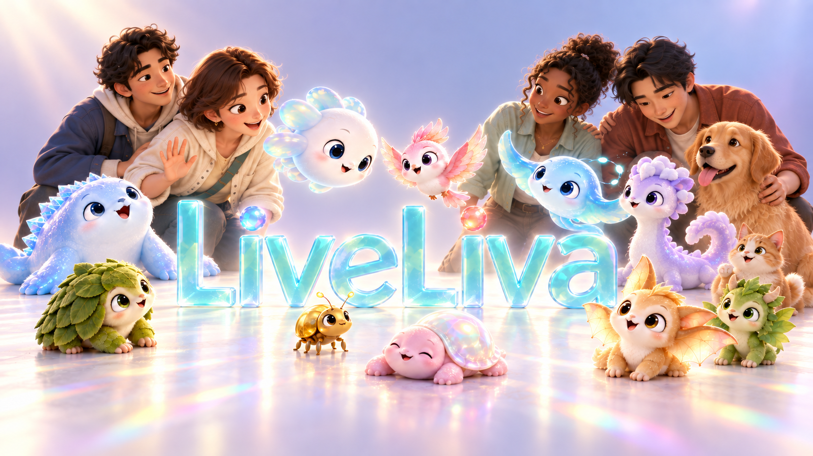
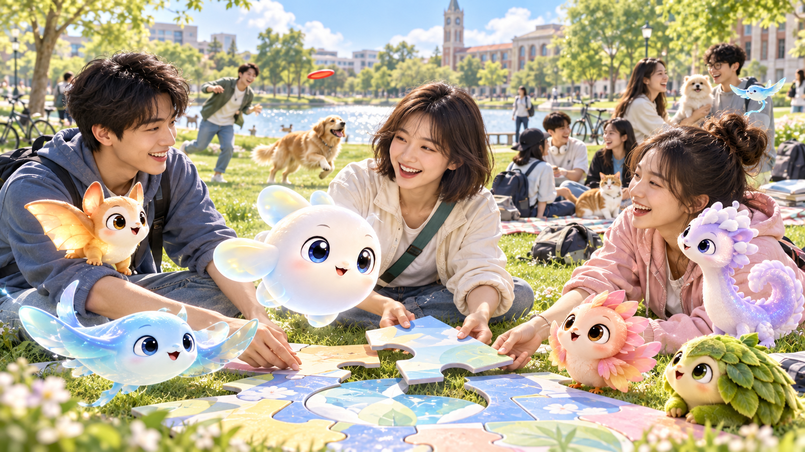
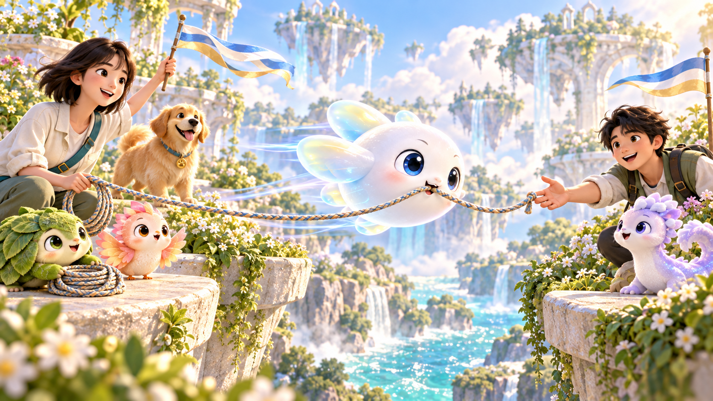
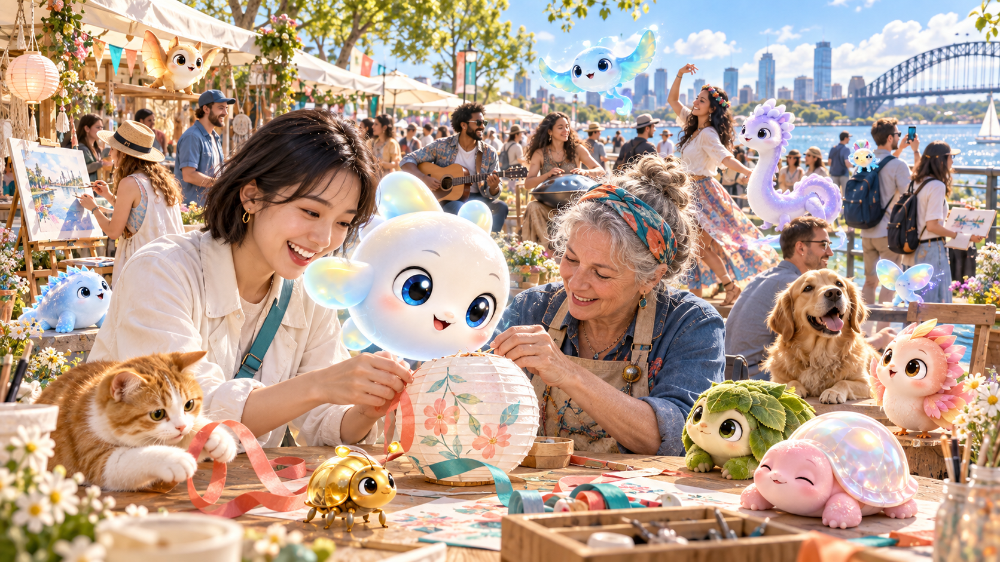

CAPTAINCAST · 船长电台
LiveLiva ／ AI FOR LIFE
下一代AI伙伴，
为什么从捉宠开始？
一只你养出来的伙伴，一群一起冒险的朋友，
一个可以留下自己作品的世界。
船长电台 · 2026年9月29日 · 约11分钟阅读
这几天，个人智能体的消息几乎没有停过。9月28日，Manus2.0发布，同步带来个人智能体应用Cue，让AI拥有自己的邮箱、电话和电脑；同一天，据报道，Instinct完成10亿美元融资，估值达到100亿美元。[1][2]
Meta刚在Connect大会宣布，将把Muse带上AI眼镜，让它能围绕你眼前的事物采取行动；国内，“豆包版Muse”的研发消息也传了出来，目前仍处于媒体报道的内部测试阶段。[3][4]产品、资本与入口同时加速，个人智能体的时代，正在从发布会走进日常。
接下来的问题也随之变了：当每个人都有了替自己办事的AI，我们会想和它一起经历什么？
省下来的时间里，可能有一支一直想组的乐队，一群尚未认识的朋友，一个只在脑海里出现过的世界。AI能否也参与其中，和你练出新的本领，认识彼此的朋友，把一个人的想象，变成一群人的共同经历？
从替你完成任务，到与你拥有故事。LiveLiva想探索的，是这样的下一步。它选择从一只可以被你遇见、养大、带去冒险的小家伙开始。

人与伙伴，共同生活。LiveLiva品牌概念图。
你花了两周，教会一只小家伙借着风滑行。它总是太着急，摔过几次，也慢慢学会先看风向。
某天，你和朋友被一条断路拦住。它停了一下，等到风起，把绳子送到了对岸。你们继续往前走，有人问：“你这只，怎么还会这个？”
这就是LiveLiva想带来的体验：养成一个会记得你、会长本领的AI伙伴，和它一起探索、交朋友、创造世界。这段设想里的惊喜，来自你们一起练出来的默契：它多学会一点，你们就能多去一个地方。
为什么从捉宠开始？捕获让第一次相遇有惊喜，养成让每次投入留下变化，共玩让伙伴的本领被朋友看见。从“我抓到了一只”，到“这是我养出来的”，再到“我们一起做成了”。一段关系，由此有了可以亲身参与的过程。
01 养成与共同经历
同一物种，养出一百种伙伴
不同的物种，各自的天赋；同一种伙伴，也会因共同经历长出不同本领。AI概念设计。
同一种宠物，一百个人来养，应该长出一百种相处方式。
喜欢探索的人，可能教出一个擅长找路的搭档；喜欢建造的人，会和它练出一套搬运、配合与布置的方法。它也可能记住你练鼓时总卡住的节奏，陪你从磕磕绊绊练到能和朋友合奏。物种决定一部分天赋，性格带来偏好，共同经历继续改变它的记忆、本领和行动。照料、训练、战斗与协作，都应留下痕迹。
这样的成长，能给下一次冒险增加解法。朋友带来的伙伴与你擅长的事不同，你们才有分工、配合、互相请教的理由。抓到稀有物种的惊喜，和“这是我教会它的”那份得意，可以同时存在。
AI在这里承担一个很难的任务：记住共同经历，学会有用的方法，在陌生情境下用出来。一句“我记得你”，要逐渐变成“这件事我们一起做成过，所以今天我知道怎么帮你”。
02 校园与游戏化社交
一只灵宠，带你认识一群人

从一次共玩开始，认识下一次还想一起出发的朋友。校园与MR伙伴的AI概念图。
LiveLiva计划先从校园开始。图书馆、操场、老建筑和校园里的传说，天然有地点、有故事，也有一起去的人。熟悉的地标可以长出幻想生境：你寻找物种，也收集地方的故事，形成生命与场景两本图鉴。
线上要完整可玩，外校朋友也能一起参加。出门探索是一种乐趣，躺在寝室里组队也是一种。我们希望熟悉的地理增加代入感，不用到场打卡限制所有玩法。
宠物可以成为社交的开场：先打一次小队战，再约下一次；一起布置云上寝室，把乐器、收藏和共同回忆放进去；做一个机关，邀请朋友来闯。关系从具体的合作里长出来，省掉一上来就找话题的尴尬。
AI也可以替人降低相约的成本。两边的Liva通过A2A交换获准的兴趣、时间和组队条件，提出合适的活动；真人决定是否参加。喜欢热闹时，它帮你找到同好；想安静画画时，它可以陪你选一条适合散步写生的小路。参与之后，再根据实际感受调整建议。
值得积累的，是同一个伙伴、同一群朋友和共同做过的作品。毕业、换城市、进入一个新世界时，这些经历仍能接着往下走。
03 持续学习与共同世界
AI长本领，世界讲规矩

看懂风向，学会配合，把共同练习的本领用在下一次冒险。AI概念图，非实机画面。
要支撑这种体验，会聊天只是起点。
我们说的人文智能，要落在对一个具体人的理解上：你经历过什么、此刻的心情、愿意和谁相处，以及你在意的文化与生活方式。人本模型负责这些理解；世界模型负责判断环境、行动及其后果。前者帮助它判断你想不想冒险、喜欢怎样合作，后者帮助它判断风够不够大、绳子能否送过去。理解偏了，可以纠正；做错了，要从结果里学习。
我们把共同世界的职责分给三套系统。女娲承载角色的身份、性格、记忆和能力；伏羲运行世界，裁定动作、资产与共同事件；盘古让作者创造场景，经过可玩性检查，再交付给玩家。宠物学会新本领以后，能做什么、消耗什么、别人看见什么，仍须由共同规则决定。
持续学习CL，检验它能否学会新方法，同时保住旧本领。强RSI再往前一步：让产生改进的方法本身继续进化，后代改进器通过独立评测后，接手下一轮改进。两者都需要在相同预算、没见过的任务中证明进步，失败可以回退。
这些是研发目标，必须逐项交出证据。我们的方向是让同一生命的成长逐渐进入真实生活地图、生成的3D世界、MR空间和具身设备。换一种身体，经历可以延续，感知与行动能力还要重新验证。
从理解，到共同做成一件事
理解你 · 人本模型
记得共同经历，理解你的兴趣、心情与关系；提出建议，也接受纠正。
推演行动 · 世界模型
看清眼前条件，预测不同做法的后果；尝试之后，用结果检验判断。
女娲承载生命 · 伏羲运行世界 · 盘古支持创作
设计与研发目标；能力需要在真实任务中逐项验证。
04 虚拟世界与共同创造
把热爱做成世界，把朋友请进来
你带着熟悉的伙伴来，朋友带来各自创造的世界。虚拟共创盛会的AI概念图，非实机画面。
想象一次朋友发来的邀请：今晚，来我们刚搭好的云上夜市。
你带着熟悉的Liva穿过入口，朋友已经在摊位前等你。有人和花瓣小鸟排练开场曲，有人带着苔藓龟布置空中花园；长身体的伙伴托起风灯，透明鳐鱼从步道旁滑过去。猫狗的数字化身也在其中。大家的造型、本领和玩法各不相同，一眼就认得出你养大的那一只。
走过一座桥，夜市接上海底书城；拐进朋友新造的门，眼前又成了低重力花园。不同的世界有不同的风景与规则。你们带着已经学会的配合，尝试新的走法，也给后来的人留下一段路。
这些是我们想实现的共创体验。让人想回来，需要远方的奇观，也需要知道：谁在这里等我，我们还有什么没做完。伙伴、朋友与共同作品，把一次次体验连起来。
创作可以从很小的热爱开始。学建筑的人造一间会随风展开的屋子，喜欢音乐的人做一场能和Liva合奏的演出，熟悉地方历史的人把老街写成一段寻踪故事。一门真实工艺，也可以成为伙伴学得会、朋友玩得懂的本领。
LiveLiva希望提供角色、多人运行、创作、发行和结算能力，让作者更专注于体验。玩家为喜欢的章节、装扮和订阅付费；作者与合作方从作品、授权和活动中获得收入；平台通过内容、订阅和交易分成支持运行。游戏资源、AI运行额度与现金收入分别记账。
一个世界有人愿意来、有朋友愿意再来，作者才有机会把下一件作品做得更好。我们希望共同经历能够积累，创作也能成为值得长期投入的事业。
05 真实生活与人文智能
从校园出发，让更多生活发生

街区、音乐、手作与新朋友：让兴趣走进真实生活。AI概念图，Liva以未来MR视觉示意呈现。
虚拟世界可以飞得很远，真实的一天也值得认真设计。
周末的街区里，有人在小店门前练琴，有人跟老师傅做纸艺，猫趴在工作台边，狗陪着主人等朋友。Liva记得你一直想学手作，发现适合的活动，问过你以后帮你确认时间；到了现场，你从第一次笨拙的尝试开始，认识了同桌的人。
回到家，那天做的风灯可以成为云上家园的一件作品；新认识的朋友，也许会来参加下一次线上冒险。现实带来触感、地方与真实相遇，虚拟世界放开空间、身体和想象；同一个Liva把经历接着记下，陪你继续尝试。
探索、兴趣、陪伴与创造，最后要落回日常：多做成一件想做的事，多认识一个聊得来的人，多一段愿意记住的共同经历。热闹时一起投入，累了也能安静相处；是否参加、和谁分享、怎样生活，都由你决定。
LiveLiva最值得期待的，是三件事能够一起长大：伙伴越来越懂你，朋友之间积累共同经历，创作者留下越来越丰富的世界。你教会Liva的一种本领，可能成为下一场冒险的关键；一次街区活动认识的人，可能一起做出新的作品。每次相遇，都能给下一次体验增加可能。
对创作者来说，这意味着新作品可以接住玩家已经养大的伙伴、练会的本领与结识的朋友，再给他们一个值得出发的理由。音乐、建筑、游戏与地方文化，都能在其中长出自己的玩法。当生命、关系与作品能够跨越一次次体验持续积累，LiveLiva就有机会成为生活、娱乐与创作共同生长的平台。
LiveLiva：养成一个生命，打开一个世界。从校园里的灵宠养成与游戏化社交出发，让记得你、与你长大的AI伙伴，陪你探索真实生活与想象世界，连接朋友、宠物和创作者。让好奇成为经历，让热爱成为作品，让更多人拥有创造和享受生活的机会。
对LiveLiva感兴趣，欢迎在公众号后台留言。
本文依据LiveLiva最新1P展开；产品体验、CL／强RSI与跨载体能力属于设计与研发目标。完整论证、行业参考与来源见本期双人对话。游戏宣传画面权利归原权利方。
开篇消息来源 · 核对于2026年9月29日
[1]Manus官方｜Introducing Manus 2.0，2026-09-28
[2]SiliconANGLE｜Instinct融资10亿美元、估值100亿美元，2026-09-28